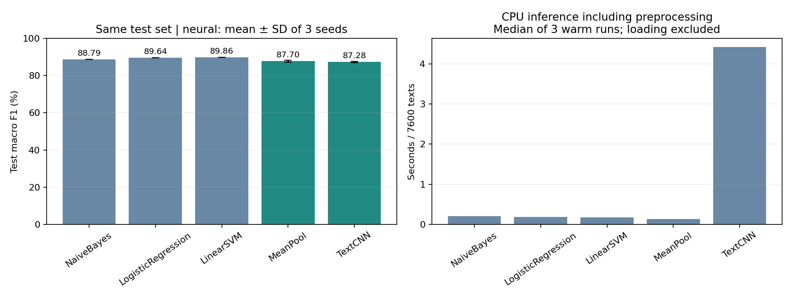
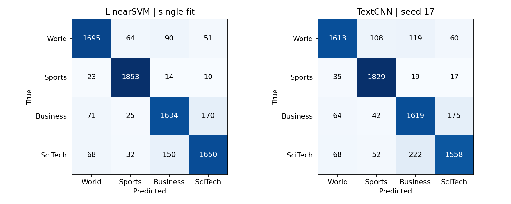

Week 06 | Zhechen Tu | AG News classification comparison Train 12000 / Validation 2000 / Test 7600 Neural: 3 seeds, random embeddings, best validation epoch Method Accuracy Macro F1 SD(F1) CPU seconds NaiveBayes 88.83% 88.79% n/a 0.205 LogisticRegression 89.67% 89.64% n/a 0.190 LinearSVM 89.89% 89.86% n/a 0.174 MeanPool 87.72% 87.70% 0.465 0.134 TextCNN 87.31% 87.28% 0.379 4.415 SVM-LR accuracy gap: 0.224 percentage points Paired bootstrap 95% interval: [-0.079, 0.539] pp Exact McNemar p=0.1898 Raw numerical ranking does not establish universal superiority.

